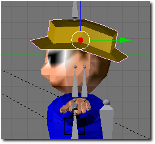
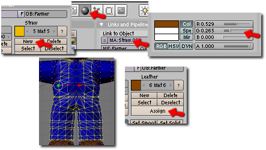
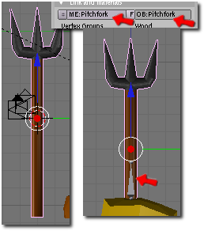
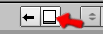
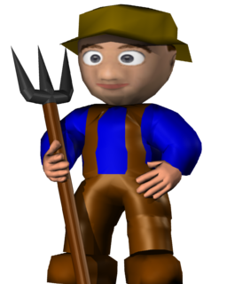
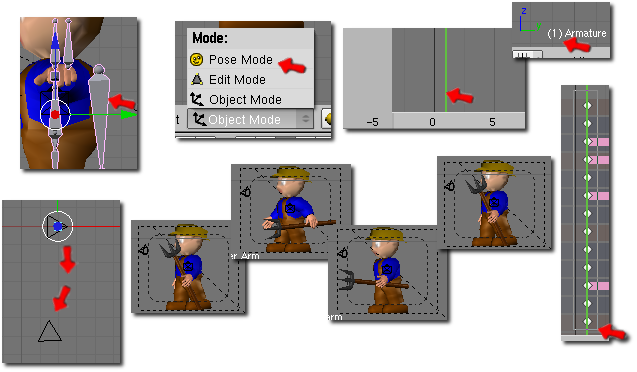
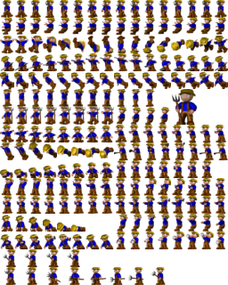

Blenderclonk Beispiele
Wer sich noch nicht mit dem Modellieren in Blender auskennt, sollte zuerst ein allgemeines Blendertutorial machen!
Dazu am besten unter
http://www.blender.org/education-help/tutorials/ eines der Anfangstutorials durchgehen. Die Blender.org Tutorials sind allerdings in englisch.
Oder Blendertutorial vom Clonk-Center: z.B.
ein Flint,
ein Bausatz oder
ein Schwert
Der Bauer Humpe will Clonk werden
Wir wollen nun einen Bauern Clonk basteln. Dazu muss erstmal Blender gestartet und das Script geöffnet werden. Da der Bauer auf dem normalen Clonk bassieren soll muss erstmal dieser geladen werden. Also im Scriptfenster auf LoadClonk oder klicken und Clonk.mesh (bzw. Clonk) auswählen.
Jetzt befinden wir uns im Hauptmenü und haben den Clonk geladen. Dieser soll jetzt aber umbenannt werden zum Bauer, damit wir nicht den normalen Clonk überschreiben. Dazu gehen wir auf Save/Load und geben unter Clonk Name statt Clonk nun Farmer ein (es ist allgemein üblich die Clonks in englisch zu bezeichnen, natürlich würde Bauer auch gehen). Nun kann der Bauer mit einem Klick auf Save Clonk gespeichert werden.
Gut, wir haben jetzt schon einen neuen Clonk geschaffen: den Bauer!
Bauer sucht Hut
Damit man den Unterschied zwischen Bauer und Clonk erkennt sollte der Bauer natürlich anders aussehen. Bauer Hump möchte gerne einen Hut auf haben. Also geben wir ihm einen.

Zuerst muss dazu ein passen der Hut modelliert werden. Das sollte mit einem grundlegenden Blendertutorial wie den oben genannten kein großes Problem darstellen.
Der Hut ist zunächst ein einzelnes Mesh. Aber damit er zusammen mit dem Clonk gespeichert werden kann muss er mit dem Clonkmesh verbunden werden. Dazu muss im ObjektMode (gegebenenfalls aus dem EditMode mit Tab gewechselt werden) zuerst das Hutmesh mit rechts angeklickt werden und dann während man Shift gedrückt hält noch das Clonkmesh mit rechts angeklickt werden. Jetzt hat der Hut einen dunklen Rand und der Clonk einen hellen. Mit Strg+J können die beiden Meshes nun verbunden werden.
Damit der Hut immer passend mit dem Kopf bewegt wird muss er jetzt eine passende VertexGroup bekommen. Dazu auf gehen, dort links unter "Vertex Group" auf das Symbol neben dem Textfeld gehen. Aus dem Dropdownmenü dann 'Head' (für das Head Bone, also den Knochen der den Kopf steuert) auswählen. Dannach mit Tab in den Edit Mode wechseln, alle Vertices des Hutes (es können auch ein paar vom Vertices vom Kopf mit drin sein, das macht nichts) markieren und mit einem Klick auf Assign der Vertexgroup zuweisen.
Im Scriptfenster kann nun unter Clonk dann mit Save Farmer der Bauer mit seinem Hut gespeichert werden.
Humpe will eine Hose haben
Als nächstes will Herr Humpe eine tolle Hose haben, denn der Einheitsoverall der Clonks ist für agrarwirtschaftliche Zwecke nicht adequat. Also muss eine braune Lederhose her.
Dazu muss zuerst eine neue Materialgroup her. Dazu unter im Bereich rechts neben den Vertexgroups auf 'New' klicken. Dann auf und dem neu erzeugten Material einen Namen geben, hier bietet sich 'Leather' für ein Ledermaterial an. Mit den Farbwähler dann einen passenden Braunton einstellen. Nun muss das Material noch den passenden Stellen am Clonk zugewiesen werden. Dazu im EditMode die Vertices markieren, die die Lederhose umspannen sollen. Dann unter auf Assign gehen, damit das Material den selektierten Faces zugewiesen wird.

So Humpe hat nun seine Hose an. Jetzt wird es mal wieder Zeit zu speichern.
Eine Mistgabel für Mr. Humpe
Als Bauer braucht man natürlich eine Mistgabel, sonst ist man ja kein richtiger Bauer!

Dazu muss natürlich zuerst einmal die landwirtschaftliche Gabel modelliert werden. Das Mistgabel-Mesh sowie das Object sollte dann den Namen 'Pitchfork' (eng. für Mistgabel) gegeben werden. Dann muss das Mesh so verschoben werden, dass die Position, an der der Clonk später die Gabel anfassen soll genau auf dem Tool1 Bone es Armatureobjectes ist (siehe Bild). Nun kann die Gabel über 'Save/Load' mit dem Button 'Save Tool' gespeichert werden, dazu im aufklappenden Menü den Eintrag 'Pitchfork' auswählen.
Jetzt soll Humpe die Gabel natürlich beim Laufen immer tragen. Dazu werden wir als Grundlage die Action 'WalkStaff' verwenden. Diese muss zunächst geladen werden. Dazu gehen wir auf 'Save/Load' und wählen den Eintrag 'Load Action' aus und laden die Action 'WalkStaff'. Jetzt geht's ins Untermenü 'Actions' da wählen wir die Action 'WalkStaff' aus. Mit einem Klick auf 'New' wird eine neue Action erstellt. Als neunen Namen geben wir 'WalkPitchfork' ein. Die Frage nach dem Kopieren der Keyframes beantworten wir mit ja. Jetzt haben wir also eine neue Action mit dem Namen Pitchfork und den Keyframes von WalkStaff. Jetzt muss noch als Tool1 Pitchfork eingestellt werden, damit der Clonk statt dem Stab die Mistgabel verwendet. Mit einem Klick auf 'Save WalkPitchfork' kann die neue Action nun gespeichert werden.
Damit mit der neuen Action statt der alten Walk Animation gerendert wird müssen wir die noch in der Actionliste des Clonks umstellen. Dazu gehen wir auf 'Clonk' und machen das Fenster mit  einem Klick auf groß. Jetzt können wir 'Walk' anklicken und statt dessen 'WalkPitchfork' auswählen.
Was gleiche können wir jetzt für die Jump Action machen. Dazu laden wir 'JumpStaff'. Mit JumpStaff wird dann die neue Action JumpPitchfork erzeugt und Pitchfork als Tool1 zugewiesen, dabei nicht vergessen die Länge der Jumpanination auf 8 Frames statt 16 zu stellen. Jetzt wird Jump in der Actionliste durch JumpPitchfork ersetzt.
Jetzt läuft und springt Humpe glücklich mit seiner Mistgabel! Zeit zu speichern.
Nun kann Bauer Humpe endlich gerendert werden und sich seiner Clonkheit freuen:

Bauernaufstand! Humpe kämpft
Doch das alles ist noch nicht genug! Humpe will seine Mistgabel auch zum Kämpfen verwenden.
Also müssen Kampfanimationen her. Da man aber mit einer Mistgabel nicht einfach zu zuschlägt wie mit einem Schwert können wir nicht die Schwertanimation nehmen und die Mistgabel mit dem Schwert austauschen. Folglich müssen wir eine ganz neue Animation machen.
Dazu gehen wir zunächst ins Untermenü Action und klicken auf 'New' und geben als neuen Namen den Namen PitchforkStrike ein. Die Frage nach dem Kopieren von Keyframes verneinen wir. Die Animationslänge stellen wir auf 8 und die Breite auf 24. Die Höhe von 20 belassen wir so. Jetzt muss das Armatureobjekt angewählt werden und in den 'Pose Mode' gewechselt werden.
Zunächst muss in den Frame 1 gewechselt werden. Die Framenummer wird immer links unten im 3D Fenster angezeigt, bzw. als grüner Stich im Animationsfenster (siehe Bild). Dazu entweder im Animatonsfenster auf die Position vom Frame 1 klicken oder mit den Pfeiltasten die Frames durch schalten. Sind wir nun im Frame 1 angelangt können wir die Bones des Clonkes so verbiegen, wie er am Anfang der Angriffsanimation aussehen soll. Dabei sollte die Kamera von schräg vorne auf den Clonk blicken, weil das bei den meisten Animationen so ist.
Fertig positionierte Bones müssen dann noch mit einem Klick auf die Taste 'i' und der Auswahl von 'LocRot' in die Keyframeliste übernommen werden. Ist die Pose fertig und alle Bonepositionen als Keyframes gespeichert kann es weitergehen. Dann geht es weiter mit Frame 5, hier soll der Clonk gerade beim Ausholen ganz hinten sein (die zwischen Frames werden von Blender dann automatisch berechnet). Im Anschluss geht es mit Frame 7 weiter, hier soll der Clonk gerade ganz nach vorne stechen. Als 9. Frame wollen wir wieder den ersten haben, damit der Clonk wieder in die Ausgangsstellung zurückkehrt. Also drücken wir 'b' um im Actionfenster alles Keyframes des ersten Frames nun mit einem gezogenen Rahmen zu markieren. Mit Shift+D werden diese nur dupliziert und an die Stelle von Frame 9 verschoben. Warum Frame 9, den sieht man doch gar nicht, wir haben ja nur 8 Frames! Wir brauchen den 1. Frame ja nicht doppelt in der Animation, diese Kopie dient nur dazu das der Frame 8 als Übergang von 7 zu dem 1 von Blender berechnet wird.
Ein Klick auf 'Save StrikePitchfork' speichert nun die neue Action.

Jetzt brauchen wir natürlich auch noch eine Animation in der Humpe mit der Mistgabel in Kampfstellung ist (dann wenn sich zwei Clonk im Kampf gegenüberstehen). Hier reicht eine Kopie von SwordFight. Also laden wir SwordFight über 'Save/Load' und 'Load Action'. Im 'Action' Untermenü kann jetzt mit 'New' eine Kopie der Action erstellt werden. Da muss jetzt die Länge auf 4 und die Breite auf 24 gesetzt werden. Also Tool1 stellen wir wieder unsere Pitchfork ein.
Jetzt kann man jedoch erkennen, dass der Clonk die Mistgabel zu hoch hält. Also im 'Pose Mode' das Tool1 Bone etwas tiefer setzen und einen Keyframe mit 'i' und 'LocRot' einfügen. Das ganze bei Frame 1, 3 und 5 jeweils so machen. Mit 'Save PitchforkFight' wird die Action dann gespeichert.
Jetzt müssen die beiden Actions noch in die Actionliste des Clonks aufgenommen werden. Dazu auf das leere Feld unter Drink klicken und 'PitchforkFigth' auswählen. Dannach in das nächste leere Feld das dann unter 'PitchforkFight' entsteht klicken und 'PitchforkStrike' auswählen.
Ein Klick auf 'Save Farmer' speichert und unsre Zusammenstellung.
Jetzt ist unser kleiner Agrarwirt endlich fertig. Mit einen Klick auf 'Render', 'All' und dann 'Both' wird nun Graphics.png und Overlay.png im Unterordner Graphics/Farmer erzeugt. Von dort können sie jetzt ins Spiel eingebaut werden.

Randrian, Mai 2008